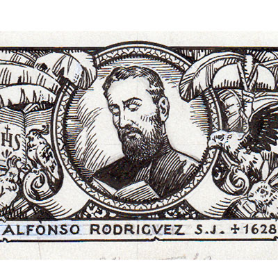
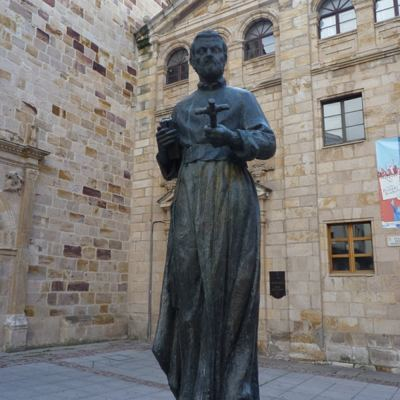

Paragvajski mučenici (3 svetaca)
Svećenik
Sv. Alons / Alonso Rodríguez
1598. – 1628.
Španjolski isusovac otputovao je u povijesnu paragvajsku misiju i učio jezike domorodačkih zajednica. Propovijedanje je povezivao s brigom za njihove životne uvjete, a Crkva ga časti među trojicom paragvajskih mučenika.

Izvor slike


Izvor slike
- Spomendan
- 16. studenoga
- Zaštitništvo
- Domorodačke tradicije i kultura · Naselja, župe, crkve i kapele Južne Amerike
- Životni vijek
- 1598. – 1628.
- Djelovanje
- Misije i evangelizacija · Mučeništvo
- Razdoblje
- 16., 17. stoljeće
- Datum rođenja
- 10.03.1598.
- Mjesto rođenja
- Zamora, Španjolska
- Datum smrti
- 15.11.1628.
- Mjesto smrti/mučeništva
- Misija Svi Sveti, Caaró, današnji Rio Grande do Sul, Brazil
- Okolnosti smrti/mučeništva
- Ubijen u napadu na misiju zajedno s Rokom Gonzálezom.
- Uloga
- Svećenik
- Mučenik
- Da
- Ostale oznake
- Član skupine trojice paragvajskih mučenika; misionar u redukcijama
- Pripadnost
- Isusovac
- Drugi oblici imena
- Alfonso Rodríguez Olmedo · Alonso Rodríguez · Alonso · Alfonso Rodriguez Olmedo · Alphonsus Rodríguez Olmedo
Životopis
Sveti Alfonso Rodríguez Olmedo bio je španjolski isusovački svećenik, misionar i mučenik među domorodačkim narodima Južne Amerike. Rodio se 10. ožujka 1598. u Zamori; jedan kataloški zapis navodi 1595., ali oba lokalna životopisa podupiru 1598.
Novicijat je prošao u Villagarcíji de Camposu u Valladolidu. Nakon redovničke priprave poslan je u povijesnu isusovačku pokrajinu Paragvaj, koja je obuhvaćala mnogo šire područje od današnje države toga imena. Iz Lisabona je otplovio s ekspedicijom koju je vodio otac Juan de Viana.
Godine 1626. poslan je u misije među Guaycuruima, preko rijeke Paraguay nasuprot Asunciónu. Učio je mjesni jezik kako bi mogao izravno razgovarati s ljudima kojima je služio. Njegov rad nije obuhvaćao samo propovijedanje, nego i nastojanje da domorodačke zajednice steknu sigurnije i dostojnije životne uvjete.
Godine 1628. premješten je u misije među Guaraníima u području Parane, a zatim u Itaipú. Pridružio se isusovcu Roqueu Gonzálezu de Santa Cruzu pri osnivanju misijskoga naselja Todos los Santos de Caaró na istočnoj obali rijeke Uruguay, na području današnjega Brazila. Njihovu se djelovanju usprotivio Ñezú, vjerski vođa i poglavica, koji je naredio njihovo ubojstvo.
Dana 15. studenoga 1628. zajednica se okupila na trgu radi postavljanja zvona. Napadači su iznenada udarili Roquea Gonzáleza po glavi. Kada je Alfonso izišao iz crkve zbog buke, napali su i njega te ga ubili kamenim čekićem zvanim itaizá. Tijela dvojice misionara odvukli su u crkvu i spalili zajedno s vjerskim slikama i kipovima. Njihov subrat Juan de Castillo ubijen je dva dana poslije.
Juan Eusebio Nieremberg, nekadašnji suučenik trojice isusovaca, objavio je njihove životopise 1644. Njihovo se zajedničko svjedočanstvo sačuvalo pod nazivom Isusovački mučenici Paragvaja, prema povijesnoj crkvenoj pokrajini u kojoj su djelovali.
Papa Pio XI. proglasio je Alfonsa Rodrígueza Olmeda i njegove drugove blaženima 28. siječnja 1934. Papa Ivan Pavao II. kanonizirao ih je 16. svibnja 1988. u Asunciónu.
Alfonso Rodríguez Olmedo nije sveti Alfonz Rodriguez, španjolski udovac i isusovački brat laik koji je desetljećima služio kao vratar na Mallorci i umro 1617. Olmedo je bio svećenik, južnoamerički misionar i mučenik ubijen 1628.
Spomendan svetoga Alfonsa Rodrígueza Olmeda slavi se 16. studenoga. Dan njegova mučeništva bio je 15. studenoga 1628.
Pročitaj više na izvornoj stranici ↗